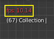
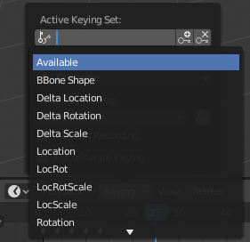
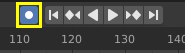

Timeline¶
The Timeline editor, identified by a clock icon, is used for manipulating keyframes and scrubbing the playhead.
The Timeline.
The Timeline gives the user a broad overview of a scene’s animation, by showing the current frame, the keyframes of the active object, the start and end frames of your animation sequence, as well as markers set by the user.
The Timeline includes Transport Controls, to play, pause, and skip through an animation sequence.
It also includes tools for manipulating Keyframes, Keying Sets, and Markers.
Main View¶
The main Timeline region displays the animation frames over time.
Here you can see the Keyframes (diamond shapes), Playhead (blue handle), Scrollbar (along the bottom),
Adjusting the View¶
The Timeline can be panned by holding MMB, then dragging the area left or right.
You can zoom the Timeline by using Ctrl-MMB, the mouse Wheel, or pressing NumpadMinus and NumpadPlus.
You can also use the scrollbars, located at the bottom or the right of the editor, to pan and zoom the view.
Playhead¶
The Playhead is the blue vertical line with the current frame number at the top.
Playhead.
The Playhead can be set or moved to a new position by pressing or holding LMB in scrubbing area at the top of the timeline.
The Playhead can be moved in single-frame increments by pressing Left or Right, or you can jump to the beginning or end frame by pressing Shift-Left or Shift-Right.
Frame Range¶
By default, the Frame Range is set to start at frame 1 and end at frame 250. You can change the frame range in the top right of the Timeline header, or in the Output Properties.
Keyframes¶
For the active and selected objects, keyframes are displayed as diamond shapes.
You can click to select one at a time, or select several by holding Shift, or by dragging a box around the keyframes. You can then move single keys by dragging them, and you can move multiple keys by pressing G and scale them with S.
Only Selected Channels can be enabled. . For Armatures, this will display the object keyframes, and the keyframes for the active and selected pose bones.
Markers¶
See the Markers page for more information.
Header¶
Popovers¶
Playback Popover¶
The Playback popover contains options controlling the animation playback.
- Sync Mode
- 
3D View red FPS.
60:54.75When you play an animation, the frame rate is displayed at the top left of the 3D View. If the scene is detailed and playback is slower than the set Frame Rate (see Dimensions Panel), these options are used to synchronize the playback.
- No Sync
- Do not sync, play every frame.
- Frame Dropping
- Drop frames if playback is too slow.
- AV-sync
- (Audio/Video Synchronization). Sync to audio clock, dropping frames if playback is slow.
- Audio Scrubbing
- If your animation has sound, this option plays bits of the sound wave while you move the playhead with LMB or keyboard arrows (like a moving playhead).
- Mute Audio
- Mute the sound from any audio source.
- Subframes
- Display and allow changing the current scene sub-frame.
- Limit Playhead to Frame Range
- Don’t allow selecting frames outside of the playback range using the mouse.
- Follow Playhead
- Animation editors can be setup to always follow the time indicator as animation is being played back. Following will be done when animating and changing frame. When the cursor reaches the end of the screen, the next range of frames of the same width will be displayed.
- Active Editor Only
- While playing, updates the Timeline, if Animation Editors and All 3D Viewports disabled.
- All 3D Viewports
- While playing, updates the 3D View and the Timeline.
- Animation Editors
- While playing, updates the Timeline, Dope Sheet, Graph Editor, Video Sequencer.
- Property Editors
- When the animation is playing, this will update the property values in the UI.
- Image Editors
- The Image editor in Mask mode.
- Sequencer Editors
- While playing, updates the Video Sequencer.
- Node Editors
- While playing, updates the Node properties for the node editors.
- Clip Editors
- While playing, updates the Movie Clip Editor.
Keying Popover¶
The Keying popover contains options that affect keyframe insertion.
- Active Keying Set
- 
Timeline Keying Sets.
Keying Sets are a set of keyframe channels in one. They are made so the user can record multiple properties at the same time. With a keying set selected, when you insert a keyframe, Blender will add keyframes for the properties in the active Keying Set. There are some built-in keying sets, LocRotScale, and also custom keying sets. Custom keying sets can be defined in the panels .
- Insert Keyframes (plus icon)
- Insert keyframes on the current frame for the properties in the active Keying Set.
- Delete Keyframes (minus icon)
- Delete keyframes on the current frame for the properties in the active Keying Set.
- New Keyframe Type
- Keyframe Types on insertion.
- Auto-Keyframing Mode
This controls how the auto keyframe mode works. Only one mode can be used at a time.
- Add & Replace
- Add or replace existing keyframes.
- Replace
- Only replace existing keyframes.
- Auto Keying Set (two keys icon)
- When enabled Auto Keyframe will insert new keyframes for the properties in the active Keying Set.
- Layered Recording
- Adds a new NLA Track and strip for every loop/pass made over the animation to allow non-destructive tweaking.
- Cycle-Aware Keying
When inserting keyframes into trivially cyclic curves, special handling is applied to preserve the cycle integrity (most useful while tweaking an established cycle):
- If a key insertion is attempted outside of the main time range of the cycle, it is remapped back inside the range.
- When overwriting one of the end keys, the other one is updated appropriately.
Menus¶
Markers Menu¶
Markers are used to denote frames with key points or significant events within an animation. Like with most animation editors, markers are shown at the bottom of the editor.

Markers in animation editor.
For descriptions of the different marker tools see Editing Markers.
Header Controls¶
The Timeline header controls.
Timeline header controls.
Transport Controls¶
These buttons are used to set, play, rewind, the Playhead.

Transport controls.
- Jump to start (⏮) Shift-Ctrl-Down, Shift-Left
- This sets the cursor to the start of frame range.
- Jump to previous keyframe (⏪︎) Down
- This sets the cursor to the previous keyframe.
- Rewind (◀) Shift-Alt-A
- This plays the animation sequence in reverse. When playing the play buttons switch to a pause button.
- Play (▶) Alt-A
- This plays the animation sequence. When playing the play buttons switch to a pause button.
- Jump to next keyframe (⏩︎) Up
- This sets the cursor to the next keyframe.
- Jump to end (⏭) Shift-Ctrl-Up, Shift-Right
- This sets the cursor to the end of frame range.
- Pause (⏸) Alt-A
- This stops the animation.
Frame Controls¶
- Current Frame Alt-Wheel
- The current frame of the animation/playback range. Also the position of the Playhead.
- Preview Range (clock icon)
- This is a temporary frame range used for previewing a smaller part of the full range. The preview range only affects the viewport, not the rendered output. See Preview Range.
- Start Frame
- The start frame of the animation/playback range.
- End Frame
- The end frame of the animation/playback range.
Keyframe Control¶
- Auto Keyframe
- 
Timeline Auto Keyframe.
The record button enables Auto Keyframe: It will add and/or replace existing keyframes for the active object when you transform it in the 3D View.
For example, when enabled, first set the Playhead to the desired frame, then move an object in the 3D View, or set a new value for a property in the UI.
When you set a new value for the properties, Blender will add keyframes on the current frame for the transform properties. Other use cases are Fly/Walk Mode to record the walk/flight path and Lock Camera to View to record the navigation in camera view.
Note
Note that Auto Keyframe only works for transform properties (objects and bones), in the 3D Views (i.e. you can’t use it e.g. to animate the colors of a material in the Properties editor…).